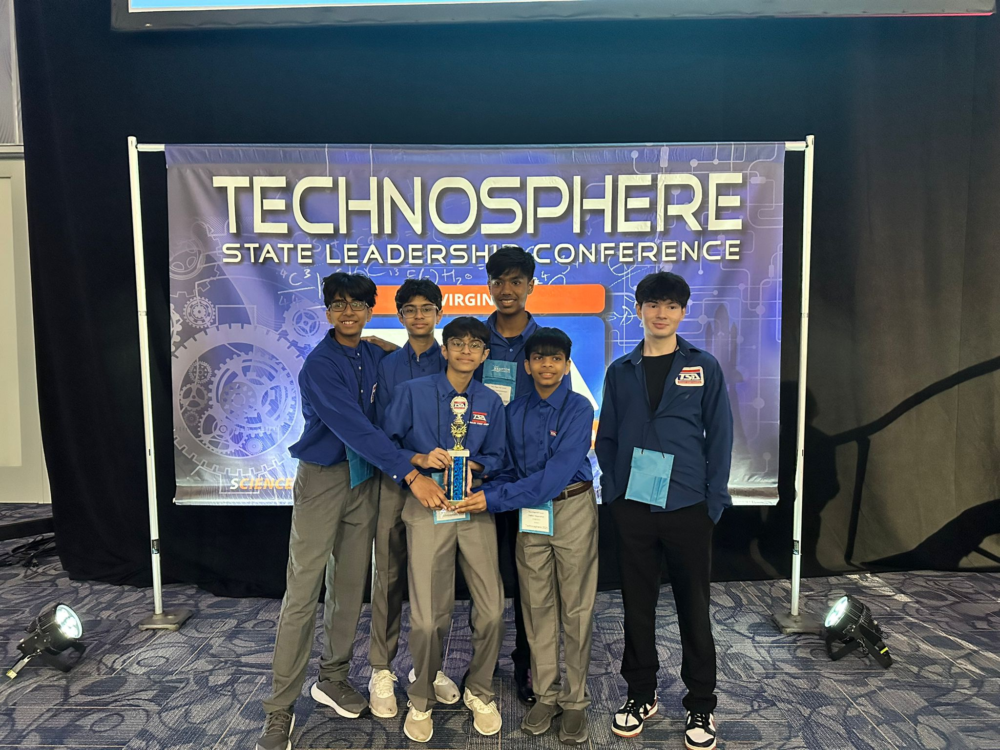

The TSA Nationals Experience
Flying to Nashville, facing the unexpected, and learning from my experiences.
Published July 2025
Heading to TSA Nationals felt like a dream. After months of prep and qualifying as a state champ, I was finally in Nashville, surrounded by thousands of sharp, ambitious students in matching TSA uniforms and badges.
I competed in two events: Forensic Science and Video Game Design. Forensic Science was interesting to say the least — an event that tested not just knowledge, but nerves. My partner and I had trained like crazy. We were ready. But then... we didn’t place. We were merely a few questions short of becoming finalists.
I won't lie — it stung. But instead of walking away bitter, I stayed to watch other events. I talked to students who had competed for years. And I realized that what matters isn’t the medal. It’s the mindset. How you grow. How you take what didn’t work and make it better next time. Being a part of Nationals gave me the opportunity to netowrk with likeminded students.
Since my loss, I’ve committed to improving — not just in content, but in composure, strategy, and teamwork. Nationals gave me more than a score. It gave me perspective. Next year, when I make my return to the National TSA Conference, I plan on competing with a new mindset filled with the things I have learned through my past experiences.